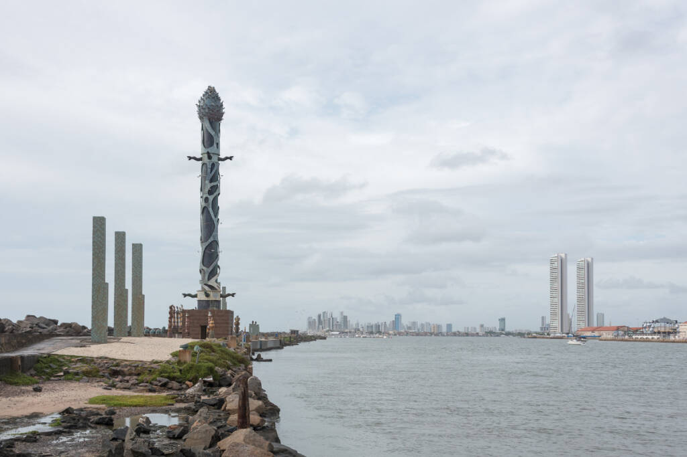
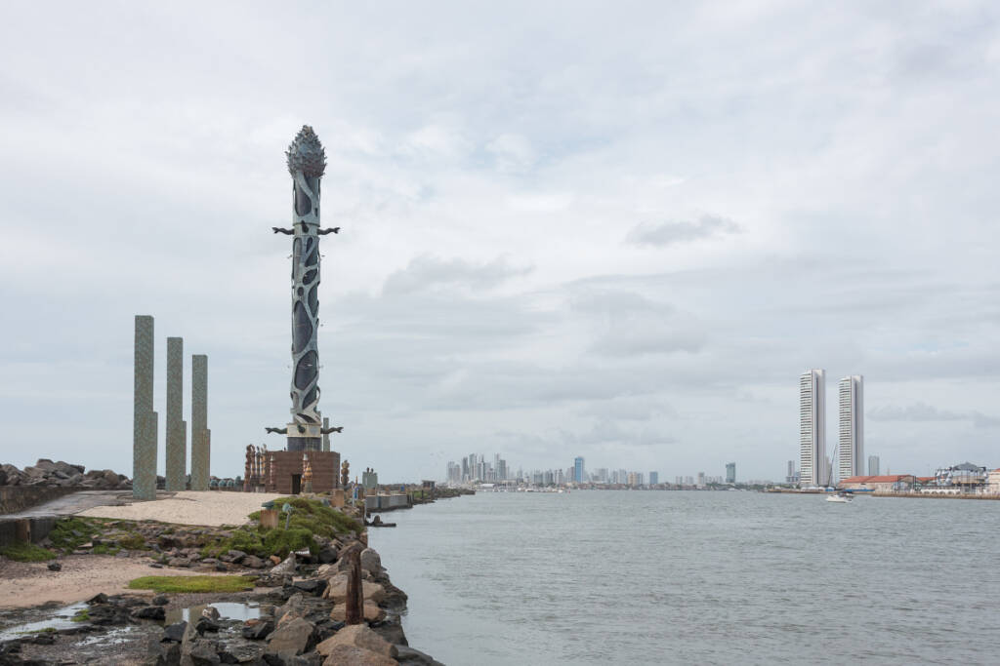

A história do Marco Zero
O Marco Zero, na Praça Rio Branco, é conhecido como local de fundação da cidade do Recife. Também como ponto inicial de contagem das distâncias calculadas a partir da cidade. O lugar é um dos pontos mais importantes na capital Pernambucana, pois é também uma região de forte movimento durante o Carnaval.
A popularização do nome Marco Zero aconteceu desde 1938, devido à instalação do símbolo geográfico na parte central da praça. Ele foi uma doação do Automóvel Clube de Pernambuco. Além disso, há nela uma estátua de bronze de 2,80 metros, de autoria do escultor francês Félix Charpentier.
Pontos Turísticos
O passeio no Marco Zero no Recife Antigo acontece às margens do porto velho e permite conhecer palacetes históricos, instalações portuárias, bares, restaurantes e espaços culturais.
Localização
Galeria
 
